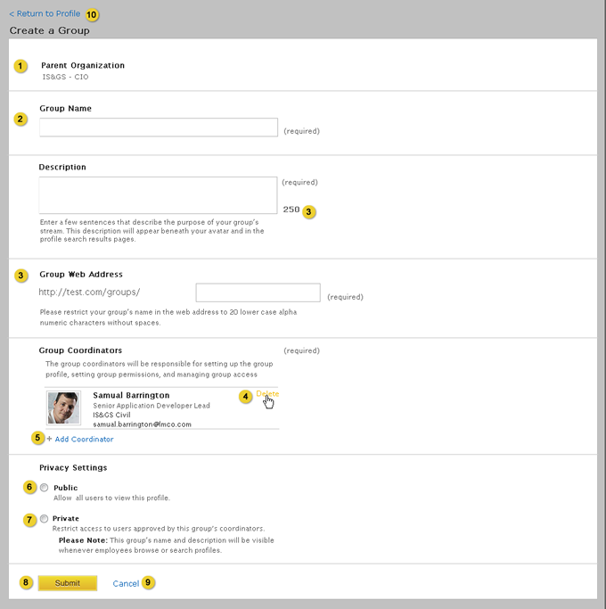
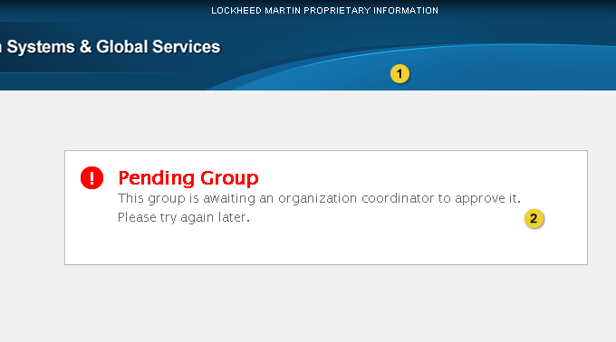

Home > Product Specification > Features > View and manage a group profile
View and manage a group profile
View and manage an organization profile
View and manage an employee profile
This page will replace the 0.9 specification for View and manage an group profile when Eureka Stream 1.0 is released. This product specification is a work in process. In the 1.0 release, popular hashtags, sorting, and RSS feeds are being added.
Overview
A group is a team of knowledge workers focused on an interest or objective. A group is represented by a profile page which may be declared public or private by the administrator. Members may engage in conversation within the group’s channel by commenting on published activity.
Conditions of satisfaction
- The knowledge worker must be able to navigate the organization hierarchy from a group profile.
- The knowledge worker must be able to browse the members associated with a group profile.
- The knowledge worker must be able to view a stream of activity associated with the group profile.
- The knowledge worker must be able to post to a stream of activity associated with the group profile.
- The knowledge worker must be able to create a new group and select whether it is public or private.
- The knowledge worker must be able to request access to a private group if he is not a member.
- The group coordinator must be able to approve or deny a membership request to a private group.
- The group coordinator must be able to upload and resize an image acting as an avatar for the group profile.
- The group coordinator must be able to upload a banner for the group profile.
- The system must display the banner selected by the parent organization (recursively) when a banner is not configured for the group profile.
- The group coordinator must be able to select a parent organization for the group profile.
- The group coordinator must be able to set a short description describing the group profile.
- The group coordinator must be able to set a url representing the website for the group.
- The group coordinator must be able to publish a group overview to the group profile.
- The group coordinator must be able to publish keywords to the group profile.
- The group coordinator must be able to add and remove colleagues as coordinators for the group profile.
- The group coordinator must be able to disable group notifications for group members and group coordinators when new activity is posted to the group.
- The group coordinator must be able to view a checklist indicating progress towards completing the group profile including the avatar, description, overview, and keywords.
- The group coordinator must be able to post as a group official to a stream of activity associated with the group profile.
- The group or organization coordinator must be able to remove a group profile.
- The knowledge worker must be able to see a list of popular hash tags in activities for the profile stream that is selected.
User experience
Create a New Group

- Name of the organization this group was created under. This field is not editable when creating the group.
- Group Name field supports up to 50 characters.
- Group Web Address field supports up to 20 lower case characters.
- Hovering over an employee name, meta data or avatar displays a Delete link allowing the knowledge worker to remove the employee as a group coordinator.
- Add Coordinator link displays the employee lookup modal which allows the knowledge worker to select employees that will be group coordinators. Refer to the Employee Lookup UX Guidelines for more information. The knowledge worker must be selected by default as the group coordinator. At least one employee must be selected as a coordinator.
- Public is the default option. All knowledge workers are able to view and join a public group.
- Group is restricted to knowledge workers added by the group coordinator.
- Submits the form and returns the knowledge worker to the group tab of the organizations profile connections tab. Return the knowledge worker to the new group profile and display the following feedback at the top of the page with a close option: “Your group has been successfully created”. If the parent organization requires that new groups be approved, return the knowledge worker to the parent organization profile and display the following feedback at the top of the page with a close option: “Your group has been submitted to an organization coordinator for approval”. Refer to the Action Feedback UX Guidelines for additional details.
- Discards the changes made to the form and returns the knowledge worker to the group tab of the organization’s profile page.
- Discards the changes made to the form and returns the knowledge worker to the group’s profile page.
Group Profile

- Group avatar, name, link to website (opens in new window)
- Button that adds a knowledge worker as a member of the group
- Group description
- Popular hashtags, maximum 5. When clicked the stream should reflect the hashtag as if the user had clicked on the hashtag from within the stream.
- Link to the list of employees that are members of the group. This list is displayed under the connect tab.
- Organization coordinators, name and avatar link to the employee profile and organization name links to the organization profile. If there are more than 2 group coordinators, a link to the Connections tab is displayed.
- Profile % complete, link opens a modal displaying the profile percent complete breakdown. If the percent complete is 100%, this section should be hidden.
- Tab contains activity as described in the Post to a stream, View a stream of activity, and Search a stream designs.
- Tab contains list of employees who are members of the group.
- Tab contains additional group profile information
- Tab contains a list of employees requesting access to the group (visible for private groups only).
- Button to configure the profile.
- Banner image
- Subscription menu. Allows the knowledge worker to subscribe to either an RSS feed or email notifications for activity within this group profile.
Notification Subscription

- Click to go to the Eureka Activity Stream Page and subscribe to the RSS Feed. RSS feed contains activity notifications for this specific group profile.
- Check the checkbox to recieve email alert of activity for this specific group profile.
Connections Tab
Members

- List of knowledge workers that are members of the group.
- Name and avatar link to the employee’s profile page, the organization name links to the organization profile.
- Paging controls.
Coordinators

- List of group coordinators.
- Name and avatar link to the employee’s profile page, the organization name links to the organization profile.
- Paging controls.
Admin Tab
Membership Requests

- Tab contains the total number of requests pending.
- Clicking the approve button adds the knowledge workers as a member of the group.
- The deny button does not add the knowledge worker as a member. When the deny button is clicked, a pop-up window displayed with the following message “Are you sure you want to deny this user membership?”
- Paging controls.
About Tab

- Overview
- Keywords link to the search results page displaying other groups that have entered the same keyword.
Launch Checklist

- Links to the group profile configuration page.
- When the section is not completed, the box is empty with 0% complete displayed.
- Check mark and percent complete appear when section is completed.
- Percent complete total
Edit Group Profile

- Upload avatar. Refer to the Upload Avatar UX Guidelines for additional details.
- Input field to enter the name of the group. Group Name field supports up to 50 characters.
- Text area to enter an group description, text area is restricted to 250 characters.
- Overview rich text editor supports an infinite amount of characters.
- Input field to enter a list of keywords that represent the topics to be discussed by the group. As the knowledge worker types in the text area an auto-complete window is displayed showing matches to keywords entered by other knowledge workers. Keywords field supports up to 50 characters per keyword. Keywords field supports an infinite amount of characters.
- Input field to enter a URL to the group’s website. URL must be in the following example format: http://www.example.com. Validate that at least one ‘.’ exists in the url.
- Hovering over a selected organization displays a Change link allowing the knowledge worker to change the selected organization. Changing a primary organization displays the organization selection modal.
- Deleting the parent organization, opens the Organization Lookup modal. Refer to the Organization Lookup UX Guidelines for more information. When the parent organization is changed, all activities associated with the group are moved to the new parent organization.
- Hovering over an employee name, meta data or avatar displays a Delete link allowing the knowledge worker to remove the employee as a group coordinator.
- Add Coordinator link displays the employee lookup modal. Refer to the Employee Lookup UX Guidelines for more information. It allows the knowledge worker to select employees that that are group coordinators.
- Refer to the Profile Banner Upload UX Guidelines for additional details. The delete link removes the uploaded banner and replaces it with the parent organizations banner. If a parent organization banner does not exist the system default banner is used. Delete link should be hidden until a group specific banner is uploaded. Upon delete, a popup window is displayed asking the knowledge worker if they are sure they want to delete the banner image.
- Indicates Privacy Settings for the group (either Public or Private).
- Select notification settings for the group. Group emails and in app notifications for new posts to the group are enabled for group members and coordinators by default. Group Coordinator can disable these options. When disabled, emails and in app notifications will not be sent to groups members and/or coordinators regardless of their individual notification settings.
- Saves the edits made to the form and returns the knowledge worker to the group’s profile page. Feedback is displayed at the top of the page with a close option: “Your group has been successfully saved”. Refer to the Action Feedback UX Guidelines for additional details.
- Discards the changes made to the form and returns the knowledge worker to the group’s profile page.
- Displays a pop up window asking the user: “Are you sure that you want to delete this group? Deleting the group will remove the profile from the system along with all of the activity that has been posted to its stream”. If the knowledge worker clicks yes the knowledge worker is taken to a read only version of the profile page and a feedback message is displayed: “This group is in the process of being deleted, you will receive a notification when the deletion is complete”.
- Discards the changes made to the form and returns the knowledge worker to the group’s profile page.
Request Access to Private Group

- Clicking request access sends an access request email to all the group coordinators and adds the user’s name to the request acces list found under the admin tab of the group profile page. When the button is clicked it becomes inactive and feedback is displayed at the top of the page with a close option: “Your request for access has been sent”. Refer to the Action Feedback UX Guidelines for additional details.
Delete Group Profile

- Banner of the root organization
- Link to the profiles page
Pending Group Profile

- Banner of the groups parent organization
- Pending group message
Test plans
Knowledge Worker
- Action: Navigate the organization hierarchy from a group profile
- Verify the profile pages of the organization hierarchy can easily be viewed from the group profile
- Action: Browse the members associated with a group profile
- Verify all members of a group are displayed on the Connections tab of the group profile when Members is selected
- Verify all coordinators associated with the group are displayed on the Connections tab of the profile when Coordinators is selected
- Verify the ability to page through both members and coordinators on the Connections tab
- Action: View a stream of activity associated with the group profile
- Verify all activity associated with the group stream is displayed, including:
- An activity with no comments or URL
- An activity with comments
- An activity containing a URL
- A shared activity from a knowledge workers stream
- A shared activity from another group stream
- A shared activity from a suborg stream
- Action: Post to a stream of activity associated with the group profile
- Verify all activity associated with the knowledge workers stream is displayed, including:
- An activity with no comments or URL
- An activity with comments
- An activity containing a URL
- A shared activity from a knowledge workers stream
- A shared activity from another group stream
- A shared activity from a suborg stream
- An activity posted as a group official
- Action: Create a new group and select whether it is public or private
- Verify a new public group can be created
- Verify the public group appears in the directory
- Verify a new private group can be created
- Verify it appears in the directory
- Verify the knowledge worker is not able to access the group
- Verify the group coordinator(s) are able to access the private group
- Action: Request access to a private group that his is not a member of and verify access once approved or denied
- Verify knowledge worker has access to the private group after access has been granted
- Verify knowledge worker does not have access to the private group if access has not been granted
- Action: Post several messages with hashtags within the group stream
- Verify that the popular hashtags displayed in the groups profile represent the top 5 hashtags entered.
Group Coordinator
- Action: Execute same tests as Knowledge Worker
- Verify tests executed successfully
- Action: Approve or deny a membership request to a private group
- Verify group coordinators can approve or deny membership to a private group
- Action: Upload and resize an image acting as an avatar for the group profile
- Verify the ability to upload a file only of type JPG, PNG, GIF
- Verify error handling is present if the file type is not correct
- Verify the ability to upload a file that is 4MB or smaller
- Verify error handling is present if the file is larger than 4MB
- Verify the ability to crop the image
- Verify the avatar is correctly displayed on the group profile
- Action: Upload a banner for the group profile
- Verify a preview of the upload is accessible
- Verify the org coordinator can browse for a file
- Verify banner file types are limited to JPG, PNG, and GIF
- Verify the banner size is limited to 4MB or smaller
- Verify the uploaded banner is automatically cropped to 990 x 100 pixels high
- Action: Confirm the banner selected by the parent organization is displayed when a banner is not configured for the group profile
- Verify a custom banner can be removed
- Verify that when a custom banner is not uploaded, the parent organizations banner displays (recursively)
- Verify that the system default banner displays when the parent organization and recursive organizations do not have a custom banner defined
- Action: Select a parent organization for the group profile
- Verify that when creating a group, the organization or sub-organization the group is to be associated must be chosen
- Verify that the associated organization can be changed via the group profile
- Verify the associated organization is displayed correctly on the group profile
- Verify the associated organization is displayed correctly in the breadcrumbs
- Action: Set a short description describing the group
- Verify the description is an optional field on the edit profile page
- Verify the description statement is limited to 250 characters
- Verify the description is displayed on the profile
- Action: Set a url representing the website for a group
- Verify a website URL can be entered on the edit profile page
- Verify the URL is displayed on the profile
- Action: Publish a group overview to the group profile
- Verify the group overview is an optional field on the edit profile page
- Verify the group overview is limited to 250 characters
- Verify the group overview is displayed on the about tab in the profile
- Action: Publish keywords to the group profile
- Verify the keywords field is optional
- Verify the keywords can be added and/or edited on the Edit profile page
- Verify keywords are displayed on the about tab in the profile
- Action: Add and remove colleagues as coordinators for the group profile
- Verify the ability to browse for a colleague
- Verify the ability to add a colleague as a coordinator
- Verify the ability to remove a colleague
- Action: View a checklist indicating progress towards completing the group profile
- Verify a checklist can easily be launched from the profile page
- Verify the various sections composing the profile checklist are easily accessible from the profile checklist
- Verify there is a percent indication on the profile page accurately representing the percent complete of the profile
- Action: Post as a group official to a stream of activity associated with the group profile
- Action: Create a new group and select whether it is public or private
- Verify a group name can be set
- Verify a group web address can be set
- Verify a new public group can be created
- Verify the public group appears in the directory
- Verify a new private group can be created
- Verify it appears in the directory
- Verify the knowledge worker is not able to access the group
- Verify the group coordinator(s) are able to access the private group
- Action: Create a new group in a sub organization that has group moderation enabled
- Verify a message is received when the group is created indicating that the group is pending approval by organization coordinators (refer to UX designs for exact message).
- Verify a message displays in the group profile indicating the group is pending approval when it is accessed by a knowledge worker (refer to UX designs for exact message).
- Action: Confirm notification settings
- Verify that group members receive emails and in app notifications when the option is enabled in the group configure page and individual user settings notification tab.
- Verify that group members do not receive emails and in app notifications if the option is disabled in the group configure page and/or individual user settings notification tab.
- Verify that group coordinators receive emails and in app notifications when the option is enabled in the group configure page and individual user settings notification tab.
- Verify that group coordinators do not receive emails and in app notifications if the option is disabled in the group configure page and/or individual user settings notification tab.
Organization Coordinator
- Action: Execute same tests as Knowledge Worker
- Verify tests executed successfully
- Action: Execute same tests as Group Coordinator
- Verify tests executed successfully
- Action: Access a newly created private group
- Verify the ability to access a newly created private group within your organization without being given specific access
- Action: Remove a group profile
- Verify an organization coordinator can remove a group profile within his organization
Root Organization Coordinator
- Action: Execute same tests as Knowledge Worker
- Verify tests executed successfully
- Action: Execute same tests as Group Coordinator
- Verify tests executed successfully
- Action: Execute same tests as Organization Coordinator
- Verify tests executed successfully
| PAGE CONTENTS
Version 1.0
Documentation is also available for all of the following versions:
0.9 | 1.1 | 1.5 | 2.0
|